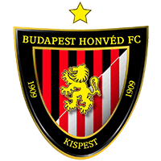
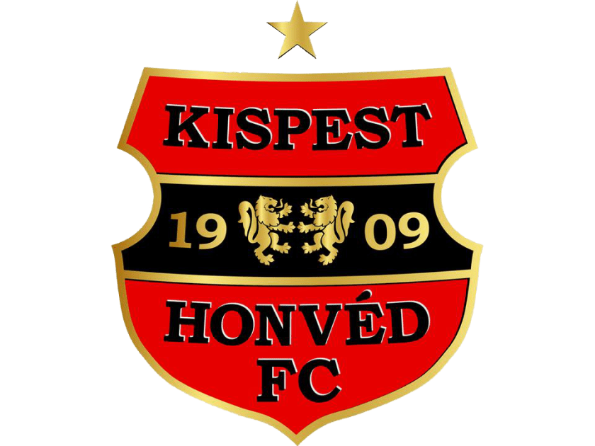

Kispesten 1908. augusztus 10-én alapították meg a Kispesti Athletikai Club-ot, melynek futball szakosztálya 1909-ben jön létre. A kispesti foci története azonban valamivel korábbra, a századfordulóig nyúlik vissza. A piactér mögötti grundon és a Lipták gyár grundján (ahol később Puskás és Bozsik is felnőtt) rúgták a labdát a Sólyom-Bika és a Kakasok szabadcsapatok. Akik egyesülve létrehozták a Kispesti Sport Club-ot a KAC elődjét.
1926-ban aztán -osztrák mintára- Magyarországon is szétválasztják az addigi amatőr és álamatőr csapatokat. Így alakul meg a profi Kispesti FC.

Első aranykorszak
A klub 1944 és 1949 között ismét Kispesti AC néven szerepel.
1949. december 18-án a Budapesti Honvéd SE vette át a stafétabotot. Puskás válasza arra, hogy mit jelentett ez akkoriban: "Nem bántok meg egyetlen kispestit, ha azt mondom: mindent, Szegény rokonból egyszerre sztárok lettünk. Bár sokszor egyenruhában jártunk, s kemény volt a fegyelem a laktanyában, kicsit hercegnek éreztük magunkat, álruhás tábornoknak."
A „Nagy-Honvéd”-nak nevezett klub a legjobb labdarúgókat ebben a korszakban tudhatta magáénak: Puskás Ferenc, Kocsis Sándor, Bozsik József és Czibor Zoltán az Aranycsapat gerincét is képezték. Nekik nagy szerepük volt abban, hogy a csapat az 1950-es években négyszer nyert magyar labdarúgó-bajnokságot. A legnagyobb nemzetközi sikerét 1959-ben érte el, amikor megnyerte a Mitropa kupát.
Második aranykorszak
A Honvéd második aranykorszaka az 1980-as és 1990-es évek elején volt, amikor nyolc bajnokságot nyert a csapat. 25 év után Tichy Lajossal a nyert a csapat újra bajnokságot. Ezután Komora, Bicskei majd Mezey vezetésével a klub futószalagon szállítja a bajnoki címeket. A nemzeti tizenegy gerince ekkor megint a Honvédra épült, a csapatnyi kiváló képességű válogatott játékos közül kiemelkedett a világválogatottságig jutó Détári Lajos.
Statisztikák szerint a Honvédnak Magyarországon a rendszerváltáskor a 4. legnagyobb szurkolótábora volt, melyet ez a két aranykorszak alapozott meg. Egy mérkőzés, és annak hangulata olyan változásokat indított el (gyorsított fel) a kispesti szurkolói életben, melynek következtében a kispesti csapat büszkélkedhet jelenleg a 3. legnagyobb szurkolótáborral. Ez a mérkőzés a Kispest-Sampdoria meccs volt, melyen 13.000 néző -köztük 2.000 genovai- előtt, örökké emlékezetes 2-1-es hazai siker született.

Napjainkban
Új edzővel, az olasz Marco Rossival kezdett a csapat a 2012-13-as szezonban és sikeresen indult az évad, hiszen két győzelemmel rajtolt a BFC Siófok és a Diósgyőri VTK ellen. A nagy riválisok közül legyőzte a Videoton FC-t és a Ferencvárosi TC-t, mely azt eredményezte, hogy egy ideig vezették a tabellát, de utána visszaesés jött és végül az ötödik helyen végeztek az őszi szezonban.
2013-ban hosszú idő után újra dobogón végzett a Bp. Honvéd , a Marco Rossi által vezetett együttes bronzérmet szerzett a bajnokságban.
2017-ben az olasz trénernek ezt a bravúrt sikerült túlszárnyalnia visszatérése után. Az esélyeseket megelőzve, az utolsó fordulóban, a közvetlen riválist legyőzve a csapat elhódította a bajnoki címet, amely a klub történetében a 14. volt. A gólkirályi címet pedig 15 találattal Eppel Márton szerezte meg.
2018 -ban az Európa-ligát érő negyedik helyen végzett a csapat, a gólkirályi címet pedig Davide Lanzafame kapta meg 18 találatáért cserébe.
2019 -ben nagy hajrával sikerült megszereznünk a negyedik helyet, ráadásul tíz év szünet után ismét Magyar Kupa-döntőt játszhatott. Igaz, a siker elmaradt, de a bajnokság gólkirályát ebben az évben is Honvéd adta, a Magyar Futball Akadémiáról indult Holender Filip személyében . Az év tavaszán a Reditus Equity Zrt. megvásárolta a Klub 100%-os tulajdonjogát.
A magyar labdarúgó csapatok élvonalbeli mérkőzései alapján számított eredményességi listán az előkelő 3. helyet tudhatja magáénak.